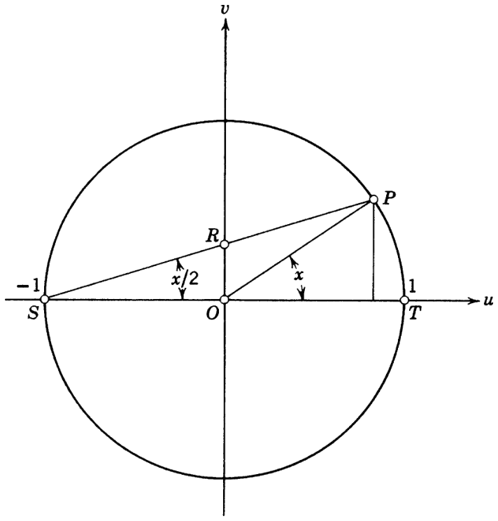
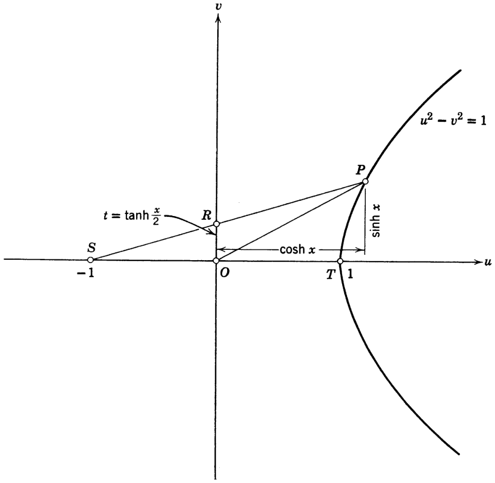

a. 圆与双曲线的有理参数表示¹
其他几大类函数的积分也能化为有理函数的积分。为理解这种化归，先回顾三角函数与双曲函数的几个初等事实。令 t = tan ( x / 2 ) t=\tan(x/2) t = tan ( x /2 )
sin x = 2 t 1 + t 2 , cos x = 1 − t 2 1 + t 2 .
\sin x=\frac{2t}{1+t^2},\qquad \cos x=\frac{1-t^2}{1+t^2}.
sin x = 1 + t 2 2 t , cos x = 1 + t 2 1 − t 2 . 事实上，由 1 / ( 1 + t 2 ) = cos 2 ( x / 2 ) 1/(1+t^2)=\cos^2(x/2) 1/ ( 1 + t 2 ) = cos 2 ( x /2 ) t 2 / ( 1 + t 2 ) = sin 2 ( x / 2 ) t^2/(1+t^2)=\sin^2(x/2) t 2 / ( 1 + t 2 ) = sin 2 ( x /2 ) sin x = 2 cos 2 ( x / 2 ) tan ( x / 2 ) \sin x=2\cos^2(x/2)\tan(x/2) sin x = 2 cos 2 ( x /2 ) tan ( x /2 ) cos x = cos 2 ( x / 2 ) − sin 2 ( x / 2 ) \cos x=\cos^2(x/2)-\sin^2(x/2) cos x = cos 2 ( x /2 ) − sin 2 ( x /2 ) sin x \sin x sin x cos x \cos x cos x t = tan ( x / 2 ) t=\tan(x/2) t = tan ( x /2 ) d t / d x = 1 / [ 2 cos 2 ( x / 2 ) ] = ( 1 + t 2 ) / 2 dt/dx=1/[2\cos^2(x/2)]=(1+t^2)/2 d t / d x = 1/ [ 2 cos 2 ( x /2 )] = ( 1 + t 2 ) /2
d x d t = 2 1 + t 2 , (82)
\frac{dx}{dt}=\frac2{1+t^2},\tag{82}
d t d x = 1 + t 2 2 , ( 82 ) 即 d x / d t dx/dt d x / d t t t t
原注 1（第 290 页） 这种表示有时称作“单值化”（uniformization）。
*几何解释。 图 3.28 说明了这些公式的作图法及其几何意义。在 u , v u,v u , v u 2 + v 2 = 1 u^2+v^2=1 u 2 + v 2 = 1 x x x ∠ T O P \angle TOP ∠ TOP u = cos x , v = sin x u=\cos x,\ v=\sin x u = cos x , v = sin x S = ( − 1 , 0 ) S=(-1,0) S = ( − 1 , 0 ) ∠ O S P \angle OSP ∠ OSP x / 2 x/2 x /2 t t t t = tan ( x / 2 ) = O R t=\tan(x/2)=OR t = tan ( x /2 ) = OR R R R S S S P P P v v v P P P S S S x x x − π -\pi − π + π +\pi + π t t t S S S t = ± ∞ t=\pm\infty t = ± ∞

图 3.28 三角函数的参数表示。
译者注 第 292 页把参数的范围印成了“从 + ∞ +\infty + ∞ + ∞ +\infty + ∞ t = tan ( x / 2 ) t=\tan(x/2) t = tan ( x /2 ) x x x − π -\pi − π π \pi π t t t − ∞ -\infty − ∞ + ∞ +\infty + ∞
现在，圆 u 2 + v 2 = 1 u^2+v^2=1 u 2 + v 2 = 1 ( u , v ) (u,v) ( u , v ) t t t u = ( 1 − t 2 ) / ( 1 + t 2 ) u=(1-t^2)/(1+t^2) u = ( 1 − t 2 ) / ( 1 + t 2 ) v = 2 t / ( 1 + t 2 ) v=2t/(1+t^2) v = 2 t / ( 1 + t 2 ) t t t u , v u,v u , v
( t 2 − 1 ) 2 + ( 2 t ) 2 = ( t 2 + 1 ) 2
(t^2-1)^2+(2t)^2=(t^2+1)^2
( t 2 − 1 ) 2 + ( 2 t ) 2 = ( t 2 + 1 ) 2 为基础。有趣的是，这个恒等式在数论中也有意义。每取一个整数 t t t a = t 2 − 1 , b = 2 t , c = t 2 + 1 a=t^2-1,\ b=2t,\ c=t^2+1 a = t 2 − 1 , b = 2 t , c = t 2 + 1 a 2 + b 2 = c 2 a^2+b^2=c^2 a 2 + b 2 = c 2 t = 2 t=2 t = 2 a = 3 , b = 4 , c = 5 a=3,b=4,c=5 a = 3 , b = 4 , c = 5 t = 4 t=4 t = 4 a = 15 , b = 8 , c = 17 a=15,b=8,c=17 a = 15 , b = 8 , c = 17
类似地，双曲函数 cosh x = 1 2 ( e x + e − x ) \cosh x=\tfrac12(e^x+e^{-x}) cosh x = 2 1 ( e x + e − x ) sinh x = 1 2 ( e x − e − x ) \sinh x=\tfrac12(e^x-e^{-x}) sinh x = 2 1 ( e x − e − x ) e x = τ e^x=\tau e x = τ cosh x = 1 2 ( τ + 1 / τ ) \cosh x=\tfrac12(\tau+1/\tau) cosh x = 2 1 ( τ + 1/ τ ) sinh x = 1 2 ( τ − 1 / τ ) \sinh x=\tfrac12(\tau-1/\tau) sinh x = 2 1 ( τ − 1/ τ ) d x / d τ = 1 / τ dx/d\tau=1/\tau d x / d τ = 1/ τ τ \tau τ t = tanh ( x / 2 ) = ( τ − 1 ) / ( τ + 1 ) t=\tanh(x/2)=(\tau-1)/(\tau+1) t = tanh ( x /2 ) = ( τ − 1 ) / ( τ + 1 )
cosh x = 1 + t 2 1 − t 2 , sinh x = 2 t 1 − t 2 .
\cosh x=\frac{1+t^2}{1-t^2},\qquad \sinh x=\frac{2t}{1-t^2}.
cosh x = 1 − t 2 1 + t 2 , sinh x = 1 − t 2 2 t . 对 t = tanh ( x / 2 ) t=\tanh(x/2) t = tanh ( x /2 )
d x d t = 2 1 − t 2 . (83)
\frac{dx}{dt}=\frac2{1-t^2}.\tag{83}
d t d x = 1 − t 2 2 . ( 83 ) 从图 3.29 一眼可见，这里的 t t t

图 3.29 双曲函数的参数表示。 在 u , v u,v u , v u = ( 1 + t 2 ) / ( 1 − t 2 ) , v = 2 t / ( 1 − t 2 ) u=(1+t^2)/(1-t^2),\ v=2t/(1-t^2) u = ( 1 + t 2 ) / ( 1 − t 2 ) , v = 2 t / ( 1 − t 2 ) u 2 − v 2 = 1 u^2-v^2=1 u 2 − v 2 = 1 u = cosh x , v = sinh x u=\cosh x,\ v=\sinh x u = cosh x , v = sinh x ∣ t ∣ < 1 |t|<1 ∣ t ∣ < 1 ∣ t ∣ > 1 |t|>1 ∣ t ∣ > 1
*b. R ( cos x , sin x ) R(\cos x,\sin x) R ( cos x , sin x )
用 R ( cos x , sin x ) R(\cos x,\sin x) R ( cos x , sin x ) sin x , cos x \sin x,\cos x sin x , cos x ( 3 sin 2 x + cos x ) / ( 3 cos 2 x + sin x ) (3\sin^2x+\cos x)/(3\cos^2x+\sin x) ( 3 sin 2 x + cos x ) / ( 3 cos 2 x + sin x ) t = tan ( x / 2 ) t=\tan(x/2) t = tan ( x /2 ) ∫ R ( cos x , sin x ) d x \int R(\cos x,\sin x)\,dx ∫ R ( cos x , sin x ) d x
∫ R ( 1 − t 2 1 + t 2 , 2 t 1 + t 2 ) 2 1 + t 2 d t .
\int R\left(\frac{1-t^2}{1+t^2},\frac{2t}{1+t^2}\right)\frac2{1+t^2}\,dt.
∫ R ( 1 + t 2 1 − t 2 , 1 + t 2 2 t ) 1 + t 2 2 d t . 现在被积函数已是 t t t
c. R ( cosh x , sinh x ) R(\cosh x,\sinh x) R ( cosh x , sinh x )
同样，若 R ( cosh x , sinh x ) R(\cosh x,\sinh x) R ( cosh x , sinh x ) cosh x , sinh x \cosh x,\sinh x cosh x , sinh x t = tanh ( x / 2 ) t=\tanh(x/2) t = tanh ( x /2 )
∫ R ( cosh x , sinh x ) d x = ∫ R ( 1 + t 2 1 − t 2 , 2 t 1 − t 2 ) 2 1 − t 2 d t .
\int R(\cosh x,\sinh x)\,dx=\int R\left(\frac{1+t^2}{1-t^2},\frac{2t}{1-t^2}\right)\frac2{1-t^2}\,dt.
∫ R ( cosh x , sinh x ) d x = ∫ R ( 1 − t 2 1 + t 2 , 1 − t 2 2 t ) 1 − t 2 2 d t . （如前所述，也可以取 τ = e x \tau=e^x τ = e x τ \tau τ cosh x \cosh x cosh x sinh x \sinh x sinh x
*d. R ( x , 1 − x 2 ) R(x,\sqrt{1-x^2}) R ( x , 1 − x 2 )
作代换 x = cos u , 1 − x 2 = sin u , d x = − sin u d u x=\cos u,\ \sqrt{1-x^2}=\sin u,\ dx=-\sin u\,du x = cos u , 1 − x 2 = sin u , d x = − sin u d u ∫ R ( x , 1 − x 2 ) d x \int R(x,\sqrt{1-x^2})\,dx ∫ R ( x , 1 − x 2 ) d x t = tan ( u / 2 ) t=\tan(u/2) t = tan ( u /2 )
t = 1 − x 1 + x , x = 1 − t 2 1 + t 2 , 1 − x 2 = 2 t 1 + t 2 , d x d t = − 4 t ( 1 + t 2 ) 2 .
t=\sqrt{\frac{1-x}{1+x}},\quad x=\frac{1-t^2}{1+t^2},\quad
\sqrt{1-x^2}=\frac{2t}{1+t^2},\quad \frac{dx}{dt}=\frac{-4t}{(1+t^2)^2}.
t = 1 + x 1 − x , x = 1 + t 2 1 − t 2 , 1 − x 2 = 1 + t 2 2 t , d t d x = ( 1 + t 2 ) 2 − 4 t . 这就等于直接用 t = tan ( u / 2 ) t=\tan(u/2) t = tan ( u /2 )
*e. R ( x , x 2 − 1 ) R(x,\sqrt{x^2-1}) R ( x , x 2 − 1 )
代换 x = cosh u x=\cosh u x = cosh u ∫ R ( x , x 2 − 1 ) d x \int R(x,\sqrt{x^2-1})\,dx ∫ R ( x , x 2 − 1 ) d x t = ( x − 1 ) / ( x + 1 ) = tanh ( u / 2 ) t=\sqrt{(x-1)/(x+1)}=\tanh(u/2) t = ( x − 1 ) / ( x + 1 ) = tanh ( u /2 )
*f. R ( x , x 2 + 1 ) R(x,\sqrt{x^2+1}) R ( x , x 2 + 1 )
代换 x = sinh u x=\sinh u x = sinh u ∫ R ( x , x 2 + 1 ) d x \int R(x,\sqrt{x^2+1})\,dx ∫ R ( x , x 2 + 1 ) d x e u = τ e^u=\tau e u = τ tanh ( u / 2 ) = t \tanh(u/2)=t tanh ( u /2 ) = t τ = x + x 2 + 1 \tau=x+\sqrt{x^2+1} τ = x + x 2 + 1 t = ( − 1 + x 2 + 1 ) / x t=(-1+\sqrt{x^2+1})/x t = ( − 1 + x 2 + 1 ) / x
*g. R ( x , a x 2 + 2 b x + c ) R(x,\sqrt{ax^2+2bx+c}) R ( x , a x 2 + 2 b x + c )
若被积函数是 x x x ∫ R ( x , a x 2 + 2 b x + c ) d x \int R(x,\sqrt{ax^2+2bx+c})\,dx ∫ R ( x , a x 2 + 2 b x + c ) d x
a x 2 + 2 b x + c = 1 a ( a x + b ) 2 + a c − b 2 a .
ax^2+2bx+c=\frac1a(ax+b)^2+\frac{ac-b^2}a.
a x 2 + 2 b x + c = a 1 ( a x + b ) 2 + a a c − b 2 . 若 a c − b 2 > 0 ac-b^2>0 a c − b 2 > 0 ξ = ( a x + b ) / a c − b 2 \xi=(ax+b)/\sqrt{ac-b^2} ξ = ( a x + b ) / a c − b 2 ( a c − b 2 ) ( ξ 2 + 1 ) / a \sqrt{(ac-b^2)(\xi^2+1)/a} ( a c − b 2 ) ( ξ 2 + 1 ) / a ξ \xi ξ a > 0 a>0 a > 0
若 a c − b 2 = 0 , a > 0 ac-b^2=0,\ a>0 a c − b 2 = 0 , a > 0 a x 2 + 2 b x + c = a ( x + b / a ) \sqrt{ax^2+2bx+c}=\sqrt a\,(x+b/a) a x 2 + 2 b x + c = a ( x + b / a ) x x x
译者注 若根号指非负平方根，严格地说上式右边是 a ∣ x + b / a ∣ \sqrt a\,|x+b/a| a ∣ x + b / a ∣ x = − b / a x=-b/a x = − b / a
最后，若 a c − b 2 < 0 ac-b^2<0 a c − b 2 < 0 ξ = ( a x + b ) / b 2 − a c \xi=(ax+b)/\sqrt{b^2-ac} ξ = ( a x + b ) / b 2 − a c ( b 2 − a c ) ( ξ 2 − 1 ) / a \sqrt{(b^2-ac)(\xi^2-1)/a} ( b 2 − a c ) ( ξ 2 − 1 ) / a a > 0 a>0 a > 0 a < 0 a<0 a < 0 ( b 2 − a c ) ( 1 − ξ 2 ) / ( − a ) \sqrt{(b^2-ac)(1-\xi^2)/(-a)} ( b 2 − a c ) ( 1 − ξ 2 ) / ( − a )
译者注 第 296 页第一种写法的系数原印作 a c − b 2 ac-b^2 a c − b 2 ξ \xi ξ b 2 − a c b^2-ac b 2 − a c
*h. 更多化为有理函数积分的例子
还有其他类型也能化为有理函数来积分。这里简要举出两种。(1) 含两个不同一次式平方根的有理式 R ( x , a x + b , α x + β ) R(x,\sqrt{ax+b},\sqrt{\alpha x+\beta}) R ( x , a x + b , αx + β ) R ( x , ( a x + b ) / ( α x + β ) n ) R(x,\sqrt[n]{(ax+b)/(\alpha x+\beta)}) R ( x , n ( a x + b ) / ( αx + β ) ) a , b , α , β a,b,\alpha,\beta a , b , α , β
对第一种，令 ξ = α x + β \xi=\sqrt{\alpha x+\beta} ξ = αx + β α x + β = ξ 2 \alpha x+\beta=\xi^2 αx + β = ξ 2 x = ( ξ 2 − β ) / α x=(\xi^2-\beta)/\alpha x = ( ξ 2 − β ) / α d x / d ξ = 2 ξ / α dx/d\xi=2\xi/\alpha d x / d ξ = 2 ξ / α
∫ R ( x , a x + b , α x + β ) d x = ∫ R ( ξ 2 − β α , 1 α [ a ξ 2 − ( a β − b α ) ] , ξ ) 2 ξ α d ξ .
\int R\!\left(x,\sqrt{ax+b},\sqrt{\alpha x+\beta}\right)dx=
\int R\!\left(\frac{\xi^2-\beta}{\alpha},\sqrt{\frac1\alpha[a\xi^2-(a\beta-b\alpha)]},\xi\right)\frac{2\xi}{\alpha}\,d\xi.
∫ R ( x , a x + b , αx + β ) d x = ∫ R ( α ξ 2 − β , α 1 [ a ξ 2 − ( a β − b α )] , ξ ) α 2 ξ d ξ . 所得正是 §3.13g 的类型。对第二种，若引进新变量 ξ = ( a x + b ) / ( α x + β ) n \xi=\sqrt[n]{(ax+b)/(\alpha x+\beta)} ξ = n ( a x + b ) / ( αx + β )
ξ n = a x + b α x + β , x = − β ξ n + b α ξ n − a , d x d ξ = a β − b α ( α ξ n − a ) 2 n ξ n − 1 .
\xi^n=\frac{ax+b}{\alpha x+\beta},\qquad x=\frac{-\beta\xi^n+b}{\alpha\xi^n-a},\qquad
\frac{dx}{d\xi}=\frac{a\beta-b\alpha}{(\alpha\xi^n-a)^2}n\xi^{n-1}.
ξ n = αx + β a x + b , x = α ξ n − a − β ξ n + b , d ξ d x = ( α ξ n − a ) 2 a β − b α n ξ n − 1 . 于是立即得到
∫ R ( x , a x + b α x + β n ) d x = ∫ R ( − β ξ n + b α ξ n − a , ξ ) a β − b α ( α ξ n − a ) 2 n ξ n − 1 d ξ .
\int R\!\left(x,\sqrt[n]{\frac{ax+b}{\alpha x+\beta}}\right)dx
=\int R\!\left(\frac{-\beta\xi^n+b}{\alpha\xi^n-a},\xi\right)\frac{a\beta-b\alpha}{(\alpha\xi^n-a)^2}n\xi^{n-1}\,d\xi.
∫ R ( x , n αx + β a x + b ) d x = ∫ R ( α ξ n − a − β ξ n + b , ξ ) ( α ξ n − a ) 2 a β − b α n ξ n − 1 d ξ . 这是一个有理函数的积分。
i. 关于上述例子的说明
以上讨论的意义主要在理论方面。对于复杂表达式，实际运算会过于繁重。因此，凡有可能，应当利用被积函数的特殊形式来简化工作。例如，要对 1 / ( a 2 sin 2 x + b 2 cos 2 x ) 1/(a^2\sin^2x+b^2\cos^2x) 1/ ( a 2 sin 2 x + b 2 cos 2 x ) t = tan x t=\tan x t = tan x sin 2 x \sin^2x sin 2 x cos 2 x \cos^2x cos 2 x tan x \tan x tan x t = tan ( x / 2 ) t=\tan(x/2) t = tan ( x /2 ) sin 2 x , cos 2 x , sin x cos x \sin^2x,\cos^2x,\sin x\cos x sin 2 x , cos 2 x , sin x cos x
原注 1（第 297 页） 因为 sin x cos x = tan x cos 2 x \sin x\cos x=\tan x\cos^2x sin x cos x = tan x cos 2 x tan x \tan x tan x
此外，计算许多积分时，若三角形式便于用简单的递推求值，它反而比有理形式可取。例如，尽管 ∫ x n ( 1 − x 2 ) m d x \int x^n(\sqrt{1-x^2})^m\,dx ∫ x n ( 1 − x 2 ) m d x x = sin u x=\sin u x = sin u ∫ sin n u cos m + 1 u d u \int\sin^n u\cos^{m+1}u\,du ∫ sin n u cos m + 1 u d u
再如求 ∫ d x / ( a cos x + b sin x ) \int dx/(a\cos x+b\sin x) ∫ d x / ( a cos x + b sin x ) a 2 + b 2 > 0 a^2+b^2>0 a 2 + b 2 > 0 A = a 2 + b 2 , sin θ = a / A , cos θ = b / A A=\sqrt{a^2+b^2},\ \sin\theta=a/A,\ \cos\theta=b/A A = a 2 + b 2 , sin θ = a / A , cos θ = b / A
1 A ∫ d x sin ( x + θ ) .
\frac1A\int\frac{dx}{\sin(x+\theta)}.
A 1 ∫ sin ( x + θ ) d x . 引进新变量 x + θ x+\theta x + θ 1 A log ∣ tan x + θ 2 ∣ \dfrac1A\log\left|\tan\dfrac{x+\theta}2\right| A 1 log tan 2 x + θ